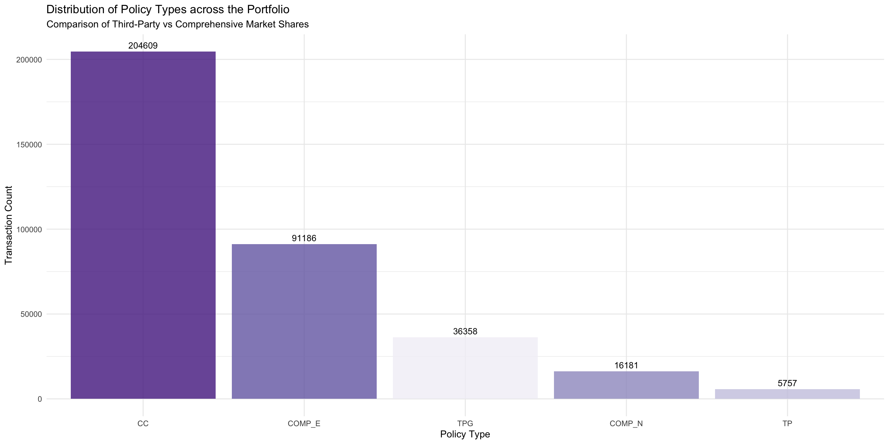
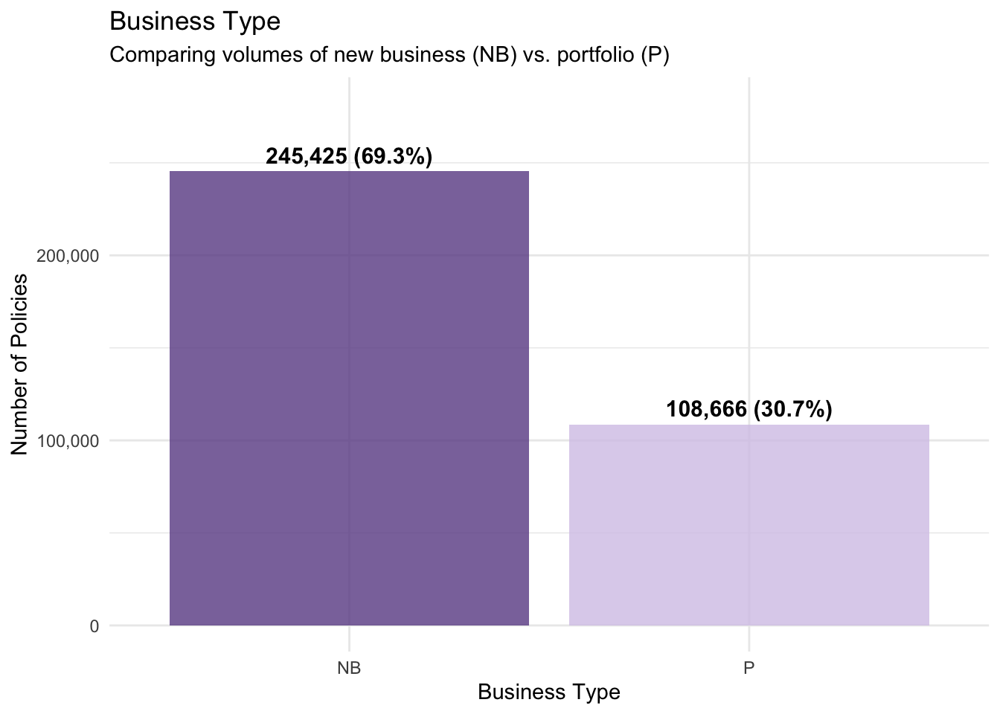
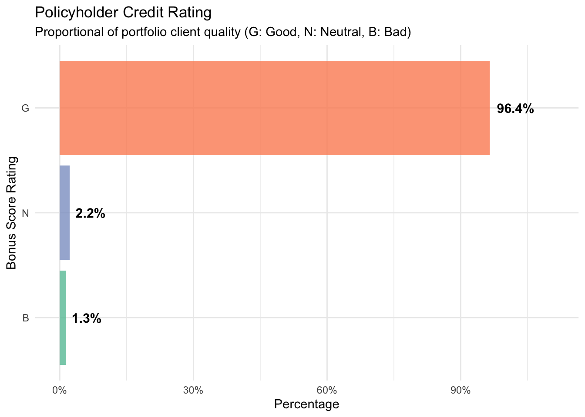
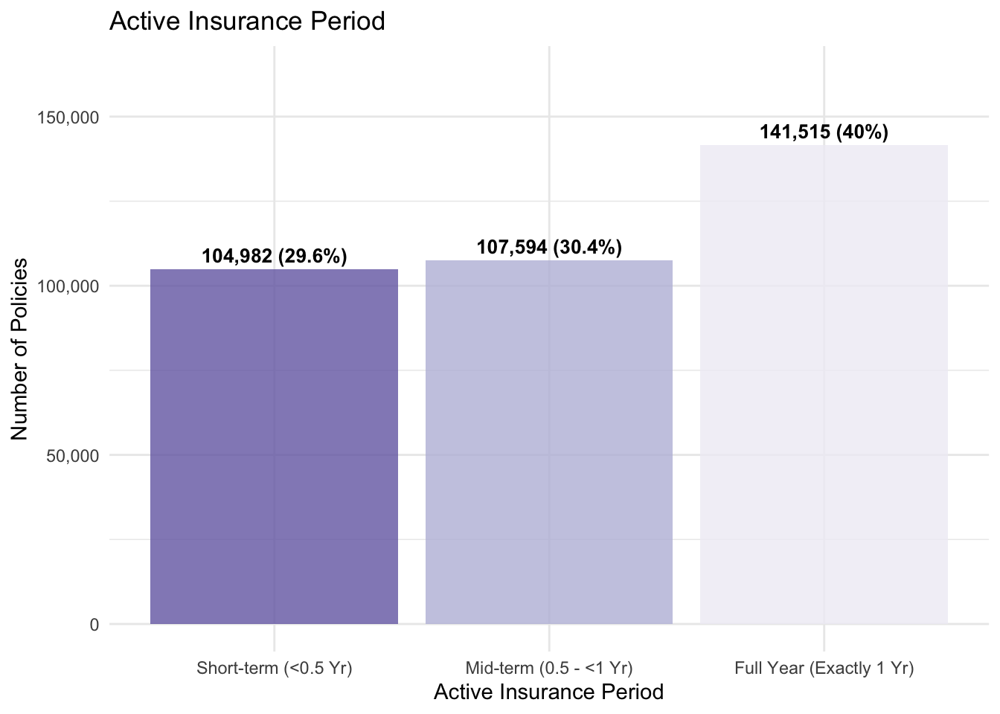
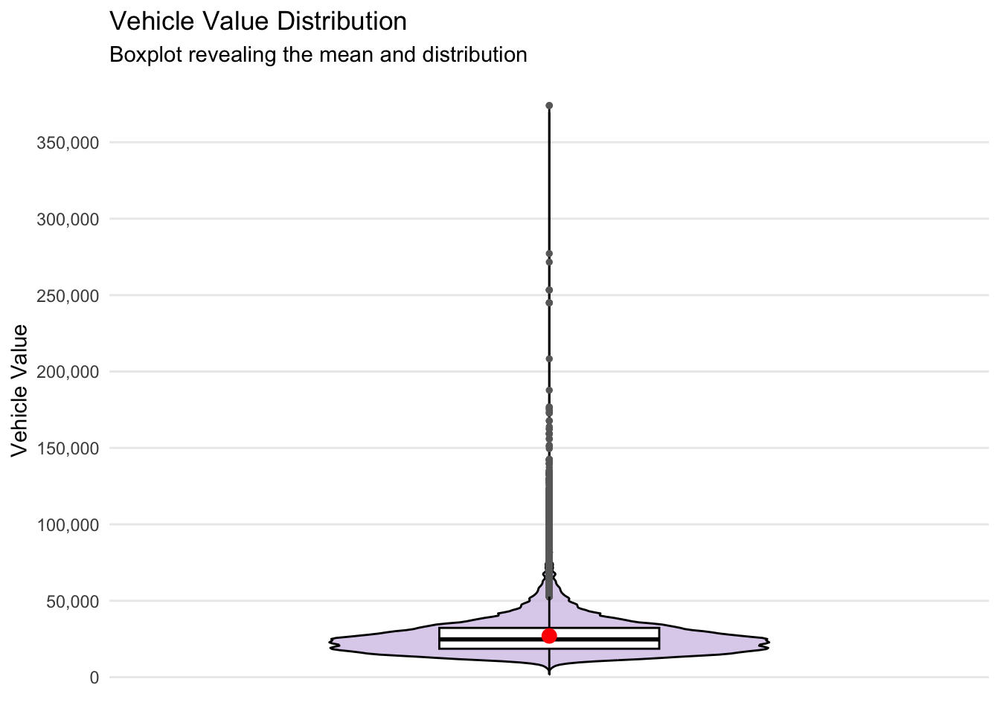
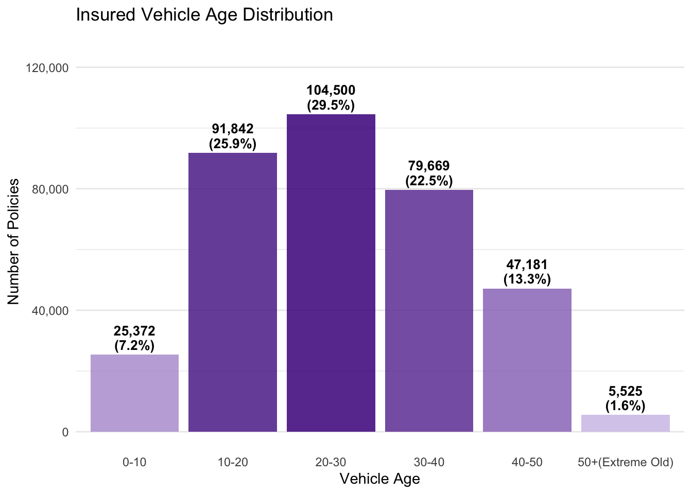
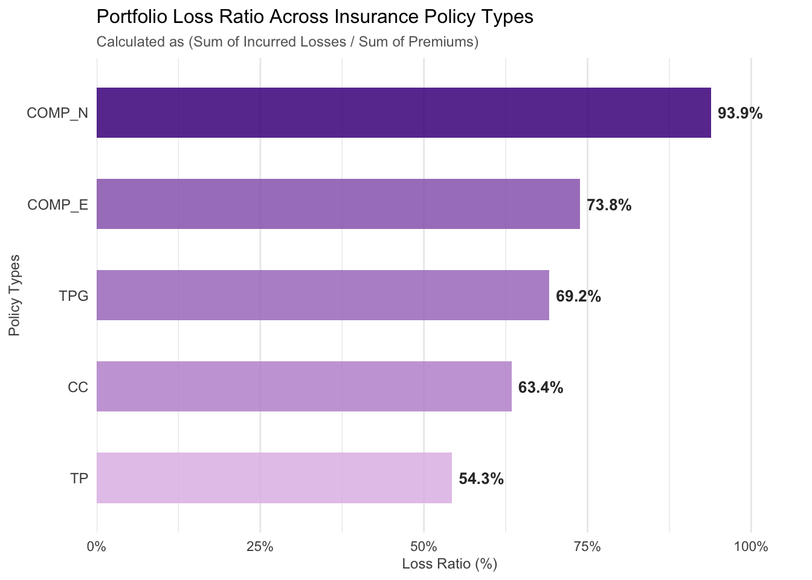
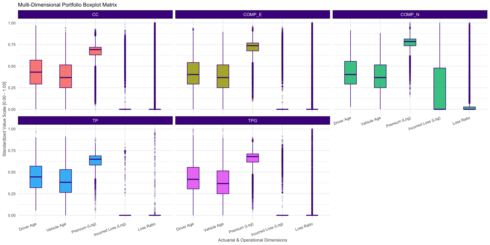

pacman::p_load(ggdist, ggstatsplot,
GGally, heatmaply,treemapify,
tidyverse) Applied Visual Analytics on Motor Vehicle Insurance Portfolio Techical Report
1. Introduction & Project Setting
In the insurance industry, underperforming portfolios are often difficult to understand because the real causes of losses and volatility can remain hidden. Traditional business intelligence tools such as Tableau and Microsoft Power BI are useful for dashboard reporting, but they are mainly designed for static monitoring and offer limited support for deeper statistical exploration.
This technical report introduces a visual analytics sandbox built with R and ggplot2 extensions to support more flexible and detailed analysis. The study uses a real-world dataset containing 354,140 automobile insurance policy transactions from a Spanish insurer between January 2022 and December 2024.

By applying a range of univariate, bivariate, and multivariate visualization techniques, the report explores the key factors affecting portfolio profitability and volatility, with the goal of supporting more informed underwriting decisions.
2. Analytical Sandbox & Data Wrangling
To build a reliable foundation for the analysis, we first import the raw dataset, clean and standardize the data types, remove records that may distort the actuarial analysis, and create several key insurance metrics for later exploration.
First we will load the R packages using the code chunk below.
2.1 Data Import
The raw data is stored in CSV format, and we use read.delim() to import it while specifying the separator as a semicolon.
raw_data <- read_delim("data/Dataset of motor insurance portfolio.csv", delim = ";")Portfolio Overview
We can see that the dataset contains anonymized motor vehicle insurance microdata from a Spanish insurance company. It spans from January 2022 to December 2024 and comprises 354,140 rows (records) and 47 columns (variables).
Granularity: Each row corresponds to an individual policy transaction rather than a unique static customer.
Key Identifier: The
insured_idvariable represents individual policyholders. Multiple rows sharing the sameinsured_idindicate sequential transactions or renewals for the same customer over time.
Variable Classifications
| Variable Group | Description | Key Attributes Included |
| Policy and Insured Characteristics | Basic contractual definitions and historical account information. |
insured_id, policy_type, policy_status, business_type, bonus_score
|
| Driver and Vehicle Characteristics | Risk profiles tied directly to the physical asset and operator demographics. |
driver_age, vehicle_age, age_driving_licence, fuel_type, vehicle_value, circulation_area
|
| Premiums | Financial components detailing total and coverage-specific pricing allocations. |
total_premium, liability_premium, property_damage_premium, theft_premium
|
| Exposure, Claims and Incurred | Operational outcomes measuring time-on-risk, claim events, and financial losses. |
total_exposure, total_claims, total_incurred, liability_incurred, property_incurred
|
2.2 Data Cleaning and Feature Engineering
Actuarial Filtering: Policies must have positive risk exposure to calculate valid rates.
insurance_processed <- filter(raw_data, total_exposure > 0)Impute Missing Values: Handle vehicle_value using median imputation
insurance_processed <- mutate(insurance_processed, vehicle_value = as.numeric(vehicle_value))
v_median <- median(insurance_processed$vehicle_value, na.rm = TRUE)
insurance_processed <- mutate(insurance_processed, vehicle_value = ifelse(is.na(vehicle_value), v_median, vehicle_value))In the next step, six core categorical attributes (`policy_type`, `fuel_type`, `municipality_type`, `circulation_area`, `business_type`, and `bonus_score`) are converted from raw text strings into R Factors to ensure to reorder chart elements based on frequency or logical business order instead of arbitrary alphabetical defaults.
insurance_processed <- mutate(insurance_processed,
policy_type = as.factor(policy_type),
fuel_type = as.factor(fuel_type),
municipality_type = as.factor(municipality_type),
circulation_area = as.factor(circulation_area),
business_type = as.factor(business_type),
bonus_score = as.factor(bonus_score)
)Next,raw operational counters are transformed into relative rates and ratios to quantify portfolio performance.
insurance_processed <- mutate(insurance_processed,
earned_premium = total_premium * total_exposure,
loss_ratio = if_else(earned_premium > 0, total_incurred / earned_premium, 0.0),
claim_frequency = total_claims / total_exposure,
claim_severity = if_else(total_claims > 0, total_incurred / total_claims, 0.0)
)Actuarial Binning of Continuous Demographics for Visual Segmentations
insurance_processed <- mutate(insurance_processed,
age_group = case_when(
driver_age < 25 ~ "18-24 (Young)",
driver_age >= 25 & driver_age < 45 ~ "25-44 (Mid)",
driver_age >= 45 & driver_age < 65 ~ "45-64 (Senior)",
driver_age >= 65 ~ "65+ (Elderly)"
),
age_group = fct_relevel(age_group, "18-24 (Young)", "25-44 (Mid)", "45-64 (Senior)", "65+ (Elderly)")
)Verify the final cleaned sandbox dimensions,now the insurance_processed data has 354,091 rows and 52 columns.
glimpse(insurance_processed)Rows: 354,091
Columns: 52
$ insured_id <dbl> 1, 2, 2, 2, 3, 3, 3, 4, 4, 4, 5, 5, 5, 6, …
$ year <dbl> 2022, 2022, 2023, 2024, 2022, 2023, 2024, …
$ policy_type <fct> COMP_E, COMP_E, COMP_E, COMP_E, COMP_E, CO…
$ policy_status <chr> "C", "A", "A", "A", "A", "A", "A", "A", "A…
$ business_type <fct> NB, P, P, P, NB, P, P, NB, P, P, NB, P, P,…
$ payment_frequency <chr> "A", "A", "A", "A", "S", "S", "S", "A", "A…
$ bonus_score <fct> G, G, G, G, G, G, G, G, G, G, G, G, G, G, …
$ driver_age <dbl> 48, 43, 44, 45, 45, 46, 47, 32, 33, 34, 39…
$ vehicle_age <dbl> 22, 24, 25, 26, 26, 27, 28, 12, 13, 14, 20…
$ age_driving_licence <dbl> 26, 19, 19, 18, 19, 19, 19, 19, 19, 19, 19…
$ fuel_type <fct> G, D, D, D, D, D, D, D, D, D, D, D, D, D, …
$ vehicle_value <dbl> 149511.44, 65065.12, 65065.12, 65065.12, 5…
$ seats <dbl> 4, 8, 8, 8, 7, 7, 7, 5, 5, 5, 5, 5, 5, 5, …
$ power_to_weight_ratio <dbl> 3.92, 10.15, 10.15, 10.15, 9.19, 9.19, 9.1…
$ vehicle_brand <chr> "PORSCHE", "MERCEDES", "MERCEDES", "MERCED…
$ municipality_type <fct> I, I, I, I, I, I, I, I, I, I, C, I, I, C, …
$ circulation_area <fct> U, U, U, U, R, R, R, R, R, R, R, U, U, R, …
$ total_premium <dbl> 279.5576, 546.6234, 548.7526, 584.6324, 68…
$ liability_premium <dbl> 30.60232, 114.33336, 110.66689, 122.09253,…
$ property_damage_premium <dbl> 121.9127, 303.1060, 304.9560, 305.2251, 35…
$ theft_premium <dbl> 112.361489, 80.784824, 83.521384, 107.8868…
$ fire_premium <dbl> 3.832441, 7.826861, 6.151465, 5.842892, 7.…
$ glass_premium <dbl> 8.305788, 30.091751, 32.861626, 31.101584,…
$ legal_protection_premium <dbl> 2.043622, 7.812747, 7.655637, 10.084173, 6…
$ occupants_premium <dbl> 0.4992053, 2.6679084, 2.9395659, 2.3992827…
$ total_claims <dbl> 0, 0, 1, 2, 0, 0, 0, 0, 0, 0, 0, 0, 0, 5, …
$ liability_claims <dbl> 0, 0, 1, 1, 0, 0, 0, 0, 0, 0, 0, 0, 0, 0, …
$ liability_property_claims <dbl> 0, 0, 1, 1, 0, 0, 0, 0, 0, 0, 0, 0, 0, 0, …
$ liability_injury_claims <dbl> 0, 0, 0, 0, 0, 0, 0, 0, 0, 0, 0, 0, 0, 0, …
$ property_claims <dbl> 0, 0, 0, 1, 0, 0, 0, 0, 0, 0, 0, 0, 0, 5, …
$ theft_claims <dbl> 0, 0, 0, 0, 0, 0, 0, 0, 0, 0, 0, 0, 0, 0, …
$ fire_claims <dbl> 0, 0, 0, 0, 0, 0, 0, 0, 0, 0, 0, 0, 0, 0, …
$ glass_claims <dbl> 0, 0, 0, 0, 0, 0, 0, 0, 0, 0, 0, 0, 0, 0, …
$ legal_protection_claims <dbl> 0, 0, 0, 0, 0, 0, 0, 0, 0, 0, 0, 0, 0, 0, …
$ occupants_claims <dbl> 0, 0, 0, 0, 0, 0, 0, 0, 0, 0, 0, 0, 0, 0, …
$ total_incurred <dbl> 0.000, 0.000, 233.013, 2586.361, 0.000, 0.…
$ liability_incurred <dbl> 0.000, 0.000, 233.013, 1035.000, 0.000, 0.…
$ liability_property_incurred <dbl> 0.000, 0.000, 233.013, 1035.000, 0.000, 0.…
$ liability_injury_incurred <dbl> 0.000, 0.000, 0.000, 0.000, 0.000, 0.000, …
$ property_incurred <dbl> 0.000, 0.000, 0.000, 1551.361, 0.000, 0.00…
$ theft_incurred <dbl> 0, 0, 0, 0, 0, 0, 0, 0, 0, 0, 0, 0, 0, 0, …
$ fire_incurred <dbl> 0, 0, 0, 0, 0, 0, 0, 0, 0, 0, 0, 0, 0, 0, …
$ glass_incurred <dbl> 0, 0, 0, 0, 0, 0, 0, 0, 0, 0, 0, 0, 0, 0, …
$ legal_protection_incurred <dbl> 0, 0, 0, 0, 0, 0, 0, 0, 0, 0, 0, 0, 0, 0, …
$ occupants_incurred <dbl> 0, 0, 0, 0, 0, 0, 0, 0, 0, 0, 0, 0, 0, 0, …
$ total_exposure <dbl> 0.09863014, 1.00000000, 1.00000000, 1.0000…
$ liability_exposure <dbl> 0.09863014, 1.00000000, 1.00000000, 1.0000…
$ earned_premium <dbl> 27.5728, 546.6234, 548.7526, 584.6324, 687…
$ loss_ratio <dbl> 0.0000000, 0.0000000, 0.4246231, 4.4239104…
$ claim_frequency <dbl> 0, 0, 1, 2, 0, 0, 0, 0, 0, 0, 0, 0, 0, 5, …
$ claim_severity <dbl> 0.0000, 0.0000, 233.0130, 1293.1807, 0.000…
$ age_group <fct> 45-64 (Senior), 25-44 (Mid), 25-44 (Mid), …3. Univariate Visual Analytics
It is important to start with univariate visual analysis, where each variable is examined on its own. This helps us understand the distribution of the data, spot any skewness in financial variables, and detect gaps or sparsity in certain operational segments.
It also ensures that the overall structure of the portfolio is consistent with basic actuarial assumptions before moving on to more complex multivariate analysis.
3.1 Policy Type Distribution
To check the market share of each policy type across the company’s business. We want to know which product is the most popular and understand the overall composition of our portfolio.
ggplot(data = insurance_processed, aes(x = fct_infreq(policy_type), fill = policy_type)) +
geom_bar(alpha = 0.8, show.legend = FALSE) +
geom_text(stat = 'count', aes(label = after_stat(count)), vjust = -0.5, size = 3.5) +
labs(
title = "Distribution of Policy Types across the Portfolio",
subtitle = "Comparison of Third-Party vs Comprehensive Market Shares",
x = "Policy Type",
y = "Transaction Count"
) +
theme_minimal() +
scale_fill_brewer(palette = "Purples", direction = -1)
This bar chart shows the distribution of different policy types across our business portfolio:
CC: This is the most common policy type, leading significantly with 204,609 transactions(57.8%).
COMP_E: The second largest category, accounting for 91,186 transactions(25.8%).
TPG: Positioned in the middle with 36,358 transactions(10.3%).
COMP_N: A smaller segment representing 16,181 transactions(4.6%).
TP: The least common policy type, with only 5,757 transactions(1.6%).
3.2 Business Type Distribution (New Business vs. Renewal)
This step is to inspect the conversion health of our portfolio. We want to see whether our revenue is driven by acquiring new clients (New Business) or retaining existing accounts (Portfolio/Renewal), which directly affects long-term stability.
business_summary <- count(insurance_processed, business_type)
business_summary <- mutate(business_summary,
percentage = n / sum(n),
label_text = paste0(scales::comma(n), " (", round(percentage * 100, 1), "%)"))
ggplot(data = business_summary, aes(x = business_type, y = n, fill = business_type)) +
geom_bar(stat = "identity", alpha = 0.8, show.legend = FALSE) +
geom_text(aes(label = label_text), vjust = -0.5, size = 4, fontface = "bold") +
scale_y_continuous(labels = scales::comma, limits = c(0, max(business_summary$n) * 1.15)) +
labs(
title = "Business Type",
subtitle = "Comparing volumes of new business (NB) vs. portfolio (P)",
x = "Business Type",
y = "Number of Policies"
) +
theme_minimal() +
scale_fill_manual(values = c("NB" = "#6A4C93", "P" = "#D6C7E8"))
The chart suggests that the portfolio is growing aggressively and relies heavily on new customer acquisition.
Nearly 70% of the total risk exposure comes from brand-new clients, showing that the business depends more on attracting new policyholders than retaining existing ones.
From a risk management perspective, this may increase uncertainty because new customers are generally less predictable than long-term renewal clients.
In contrast, renewal policies are usually more stable and easier to assess based on historical experience.
3.4 Annual Incurred Claims
This step is to monitor the volume of financial losses paid out over the calendar years.
claims_amount_annual <- group_by(insurance_processed, year)
claims_amount_annual <- summarize(claims_amount_annual, total_claims_sum = sum(total_incurred, na.rm = TRUE))
claims_amount_annual <- mutate(claims_amount_annual,
label_text = paste0("$", scales::comma(total_claims_sum))
)
ggplot(data = claims_amount_annual, aes(x = as.factor(year), y = total_claims_sum, fill = total_claims_sum)) +
geom_bar(stat = "identity", alpha = 0.85, show.legend = FALSE, width = 0.5) +
geom_text(aes(label = label_text), vjust = -0.4, size = 3.8, fontface = "bold") +
scale_y_continuous(labels = scales::comma, limits = c(0, max(claims_amount_annual$total_claims_sum) * 1.2)) +
labs(
title = "Annual Incurred Claims",
x = NULL,
y = NULL
) +
theme_minimal() +
scale_fill_gradient(low = "#b39ddb", high = "#4527a0") +
theme(
panel.grid.major.x = element_blank(),
axis.text.x = element_text(size = 10, fontface = "bold")
)
This bar chart tracks the growth of Annual Incurred Claims from 2022 to 2024.
2022: Total incurred claims stood at $12,269,925.
2023: Costs rose significantly to $23,488,354 (a 91.4% increase year-over-year).
2024: Claim financial exposure peaked at $38,106,351, marking an additional 62.2% increase from 2023.
3.5 Annual Average Claim Severity
This step is to track the average financial cost of a single claim over the calendar years. By dividing total incurred losses by the number of claims, we can see if individual accident costs are rising or stabilizing, which helps separate high-frequency trends from severe, costly individual events.
severity_annual <- group_by(insurance_processed, year)
severity_annual <- summarize(severity_annual,
avg_severity = sum(total_incurred, na.rm = TRUE) / sum(total_claims, na.rm = TRUE)
)
severity_annual <- mutate(severity_annual,
label_text = paste0("$", scales::comma(round(avg_severity, 0)))
)
ggplot(data = severity_annual, aes(x = as.factor(year), y = avg_severity, fill = avg_severity)) +
geom_bar(stat = "identity", alpha = 0.85, show.legend = FALSE, width = 0.5) +
geom_text(aes(label = label_text), vjust = -0.4, size = 3.8, fontface = "bold") +
scale_y_continuous(labels = scales::comma, limits = c(0, max(severity_annual$avg_severity) * 1.2)) +
labs(
title = "Annual Average Claim Severity Trend",
x = NULL,
y = NULL
) +
theme_minimal() +
scale_fill_gradient(low = "#b39ddb", high = "#4527a0") +
theme(
panel.grid.major.x = element_blank(),
axis.text.x = element_text(size = 10, fontface = "bold")
)
This chart shows that the average cost of an individual claim has remained remarkably stable (fluctuating by less than 4% around the $950 mark) over the three years.
Connecting this with the previous charts leads to a vital strategic conclusion: The massive surge in total claim costs (which jumped from $12.3M to $38.1M) is not driven by inflation or claims becoming more expensive individually. Instead, it is driven entirely by the sheer volume of claims. Our risk management team should focus on controlling the number of accidents rather than the cost per accident.
3.6 Policyholder Credit Rating
This step is to review the quality of our policyholders. This tells us whether our client base consists mostly of low-risk safe drivers or high-risk drivers.
bonus_summary <- count(insurance_processed, bonus_score)
bonus_summary <- mutate(bonus_summary,
percentage = n / sum(n),
label_text = paste0(round(percentage * 100, 1), "%"))
ggplot(data = bonus_summary, aes(x = percentage, y = reorder(bonus_score, percentage), fill = bonus_score)) +
geom_bar(stat = "identity", alpha = 0.8, show.legend = FALSE) +
geom_text(aes(label = label_text), hjust = -0.2, size = 4, fontface = "bold") +
scale_x_continuous(labels = scales::percent, limits = c(0, max(bonus_summary$percentage) * 1.15)) +
labs(
title = "Policyholder Credit Rating",
subtitle = "Proportional of portfolio client quality (G: Good, N: Neutral, B: Bad)",
x = "Percentage",
y = "Bonus Score Rating"
) +
theme_minimal() +
scale_fill_brewer(palette = "Set2")
This bar chart shows the distribution of policyholder credit ratings across the portfolio, categorized into three levels: G (Good), N (Neutral), and B (Bad).
G (Good): This is the dominant category, accounting for the vast majority of the portfolio at 96.4%.
N (Neutral): A very small segment, representing only 2.2% of the total.
B (Bad): The smallest group, making up just 1.3% of the portfolio.
This means the portfolio’s client quality is highly concentrated in the “Good” rating, with minimal exposure to “Neutral” or “Bad” credit risks.
3.7 Active Insurance Period
This step is to check how long policies actually stay active on risk. We want to see whether our dataset is dominated by full-year standard contracts (exposure close to 1.0) or short-term canceled/mid-term policies.
insurance_processed <- mutate(insurance_processed,
exposure_group = case_when(
total_exposure < 0.5 ~ "Short-term (<0.5 Yr)",
total_exposure >= 0.5 & total_exposure < 1.0 ~ "Mid-term (0.5 - <1 Yr)",
total_exposure == 1.0 ~ "Full Year (Exactly 1 Yr)",
total_exposure > 1.0 ~ "Long-term (>1 Yr)"
)
)
exposure_summary <- count(insurance_processed, exposure_group)
exposure_summary <- mutate(exposure_summary,
percentage = n / sum(n),
label_text = paste0(scales::comma(n), " (", round(percentage * 100, 1), "%)"),
exposure_group = fct_relevel(exposure_group,
"Short-term (<0.5 Yr)",
"Mid-term (0.5 - <1 Yr)",
"Full Year (Exactly 1 Yr)",
"Long-term (>1 Yr)")
)
ggplot(data = exposure_summary, aes(x = exposure_group, y = n, fill = exposure_group)) +
geom_bar(stat = "identity", alpha = 0.8, show.legend = FALSE) +
geom_text(aes(label = label_text), vjust = -0.5, size = 3.5, fontface = "bold") +
scale_y_continuous(labels = scales::comma, limits = c(0, max(exposure_summary$n) * 1.15)) +
labs(
title = "Active Insurance Period",
x = "Active Insurance Period",
y = "Number of Policies"
) +
theme_minimal() +
scale_fill_brewer(palette ="Purples" , direction = -1)
This chart addresses our earlier concern about contract stability. While full-year contracts represent the largest share (40%), the remaining 60% of the dataset consists of short-term or mid-term policies.
This indicates a high volume of mid-term cancellations, early lapses, or temporary coverages within the portfolio. From an analytical standpoint, this confirms that we cannot treat all policies equally; we must use the actual exposure values to weight our risk and pricing models, as a large portion of the clients were not covered for the full year.
3.8 Vehicle Value Distribution Shape
This step is to examine the cost profile of the insured vehicles. We want to see if the values are heavily skewed, which helps underwriters understand our potential maximum exposure to expensive total-loss claims.
ggplot(data = insurance_processed, aes(x = "", y = vehicle_value)) +
geom_violin(fill = "#D6C7E8", color = "black", alpha = 0.8, width = 0.6) +
geom_boxplot(width = 0.3, fill = "white", color = "black",
outlier.size = 1, outlier.color = "dimgray") +
stat_summary(fun = mean, geom = "point", color = "red", size = 3) +
scale_y_continuous(labels = scales::comma,
breaks = seq(0, 400000, by = 50000)
) +
labs(
title = "Vehicle Value Distribution",
subtitle = "Boxplot revealing the mean and distribution",
x = NULL,
y = "Vehicle Value"
) +
theme_minimal() +
theme(
axis.text.x = element_blank(),
panel.grid.major.x = element_blank(),
panel.grid.minor = element_blank()
)
From this chart we can see that while most insured vehicles are of low value, the few high-value outliers represent a potential source of high-severity volatility in claims.
The Wide Bottom (High Density): The widest part of the violin plot is at the very bottom, meaning the vast majority of vehicles are highly concentrated in the lower price range, mostly below $50,000.
The Flat Boxplot: Because the data is so heavily compressed at the bottom, the white box (which shows the quartiles) is very thin and sits near the baseline.
The Long Tail (Outliers): The plot stretches upward into a very thin line filled with grey dots. This represents a long right-skewed tail, showing that a few rare vehicles have exceptionally high values, reaching up to $380,000.
The Red Dot (Mean): The red dot represents the average vehicle value. Because it is pulled upward by the few extremely expensive vehicles, the average is noticeably higher than the median (the black line inside the box).
3.9 Vehicle Power-to-Weight Ratio Distribution
This step is to check the performance levels of the insured vehicles. High outliers point to sports cars or high-performance models, allowing us to see if we are insuring too many aggressive, heavy-risk vehicles.
ggplot(data = insurance_processed, aes(x = "", y = power_to_weight_ratio)) +
geom_violin(fill = "#D6C7E8", color = "black", alpha = 0.8, width = 0.6, adjust=2) +
geom_boxplot(width = 0.3, fill = "white", color = "black",
outlier.size = 1, outlier.color = "dimgray") +
stat_summary(fun = mean, geom = "point", color = "red", size = 3) +
labs(
title = "Power-to-Weight Ratio",
subtitle = "Boxplot revealing the mean and distribution",
x = NULL,
y = "Power-to-Weight Ratio (kg per horsepower)"
) +
theme_minimal() +
theme(
axis.text.x = element_blank(),
panel.grid.major.x = element_blank(),
panel.grid.minor = element_blank()
)
This chart shows that the portfolio’s vehicle performance risk is highly uniform, with only a small number of extreme outliers deviating from the standard passenger model.
The Wide Center (High Density): The widest part of the violin plot is heavily concentrated at the bottom, specifically between 10 and 15 kg per horsepower. This indicates that the vast majority of vehicles in the portfolio fall into this standard performance range.
The Compressed Boxplot: The white box representing the middle 50% of the data is quite narrow and sits entirely within this lower high-density zone, showing low variation among standard vehicles.
The Long Upper Tail (Outliers): The plot extends into a very tall, thin vertical line reaching up to over 60 kg per horsepower, marked by numerous grey dots. These outliers represent a small segment of vehicles with unusual performance specifications.
The Red Dot (Mean): The red dot marks the average power-to-weight ratio. It is located very close to the median (the black line inside the box), indicating that despite the long tail of outliers, the sheer volume of data concentrated at the bottom keeps the portfolio’s overall average stable.
3.10 Vehicle Age Distribution (New vs. Old Cars)
This step is to examine the physical age profile of the insured vehicle. Understanding whether our portfolio is dominated by brand-new vehicles or older cars helps underwriters assess baseline mechanical risk and depreciation patterns.
insurance_processed <- mutate(insurance_processed,
vehicle_age_binned = case_when(
vehicle_age >= 0 & vehicle_age < 10 ~ "0-10",
vehicle_age >= 10 & vehicle_age < 20 ~ "10-20",
vehicle_age >= 20 & vehicle_age < 30 ~ "20-30",
vehicle_age >= 30 & vehicle_age < 40 ~ "30-40",
vehicle_age >= 40 & vehicle_age < 50 ~ "40-50",
vehicle_age >= 50 ~ "50+(Extreme Old)"
)
)
vehicle_age_summary <- count(insurance_processed, vehicle_age_binned)
vehicle_age_summary <- filter(vehicle_age_summary, !is.na(vehicle_age_binned))
vehicle_age_summary <- mutate(vehicle_age_summary,
percentage = n / sum(n),
label_text = paste0(scales::comma(n), "\n(", round(percentage * 100, 1), "%)"),
vehicle_age_binned = fct_relevel(vehicle_age_binned,
"0-10", "10-20", "20-30",
"30-40", "40-50", "50+ (Extreme Old)")
)
ggplot(data = vehicle_age_summary, aes(x = vehicle_age_binned, y = n, fill = n)) +
geom_bar(stat = "identity", alpha = 0.85, show.legend = FALSE) +
geom_text(aes(label = label_text), vjust = -0.2, size = 3.5, fontface = "bold", lineheight = 0.9) +
scale_y_continuous(labels = scales::comma, limits = c(0, max(vehicle_age_summary$n) * 1.2)) +
labs(
title = "Insured Vehicle Age Distribution",
x = "Vehicle Age",
y = "Number of Policies"
) +
theme_minimal() +
scale_fill_gradient(low = "#d1c4e9", high = "#4a148c") +
theme(
panel.grid.major.x = element_blank(),
axis.text.x = element_text(angle = 0, vjust = 1, hjust = 0.5)
)
From this chart we can see that the portfolio carries a distinctive aging vehicle risk. Having more than 70% of insured vehicles older than 20 years (and more than 30% older than 30 years) suggests that the business primarily covers older models.
In insurance underwriting, older vehicles generally have lower market values but might face different risk profiles, such as higher mechanical failure rates or scarcity of replacement parts during claims.
3.11 Insured Vehicle Seats Capacity
This step is to evaluate the vehicle capacity risk across our business. We want to discover if the majority of cars are standard 5-seaters or if there are large commercial passenger vans/buses, which bring higher human-injury risk per accident.
# Step 1: Group continuous seat counts into logical underwriting risk cohorts
insurance_processed <- mutate(insurance_processed,
seats_group = case_when(
seats < 5 ~ "Less than 5 Seats",
seats == 5 ~ "Exactly 5 Seats",
seats > 5 ~ "More than 5 Seats (>5)"
)
)
# Step 2: Pre-aggregate the data to calculate clean counts and percentages
seats_summary <- count(insurance_processed, seats_group)
seats_summary <- filter(seats_summary, !is.na(seats_group))
seats_summary <- mutate(seats_summary,
percentage = n / sum(n),
label_text = paste0(scales::comma(n), " (", round(percentage * 100, 1), "%)"),
seats_group = fct_relevel(seats_group,
"Less than 5 Seats",
"Exactly 5 Seats",
"More than 5 Seats (>5)"))
# Step 3: Plot the clean horizontal grouped bar chart with a purple gradient
ggplot(data = seats_summary, aes(x = n, y = seats_group, fill = n)) +
geom_bar(stat = "identity", alpha = 0.85, show.legend = FALSE) +
geom_text(aes(label = label_text), hjust = -0.05, size = 3, fontface = "bold") +
scale_x_continuous(labels = scales::comma, limits = c(0, max(seats_summary$n) * 1.25)) +
labs(
title = "Vehicle Seats Capacity Distribution",
x = "Number of Policies",
y = NULL
) +
theme_minimal() +
scale_fill_gradient(low = "#e1bee7", high = "#4a148c") +
theme(
panel.grid.major.y = element_blank(),
axis.text.y = element_text(size = 10, fontface = "bold")
)
This bar chart displays the distribution of Vehicle Seats Capacity within the insurance portfolio, grouped into three categories based on the number of seats.
Overwhelming Dominance (Exactly 5 Seats): The dark purple bar shows that 300,669 policies are for vehicles with exactly 5 seats. This represents the vast majority (84.9%) of the entire portfolio.
Larger Vehicles (More than 5 Seats): Vehicles with a higher seating capacity (such as 7-seater SUVs or minivans) account for 30,453 policies, making up 8.6% of the total.
Smaller Vehicles (Less than 5 Seats): Two-seater sports cars or small city cars are the smallest segment, with 22,969 policies (6.5%).
The chart indicates that the portfolio has an extremely high concentration of standard 5-seater passenger cars.It represents a typical private passenger car market, with very low exposure to specialized smaller cars or larger multi-purpose/commercial passenger vehicles.
3.12 Driver Age Demographics by Area (Faceting)
This step is to learn how driver ages are distributed between urban and rural areas. This shows us if certain environments have a higher concentration of unexperienced young drivers or older operators.
Before analyzing the age demographics, it is important to understand the overall distribution of policies across geographic zones.
# A tibble: 2 × 4
circulation_area n percentage label_text
<fct> <int> <dbl> <chr>
1 R 163607 0.462 Total Policies: 163,607 (46.2%)
2 U 190484 0.538 Total Policies: 190,484 (53.8%)The portfolio shows a higher concentration of clients in urban areas.
Urban (U): Accounts for 190,484 policies, representing 53.8% of the total portfolio.
Rural (R): Accounts for 163,607 policies, representing 46.2% of the total portfolio.
(Total volume: 354,091 policies)
Then we use histogram to display the distribution of driver ages across urban and rural zones.
age_range <- range(insurance_processed$driver_age, na.rm = TRUE)
bin_width <- (age_range[2] - age_range[1]) / 30
ggplot(data = insurance_processed, aes(x = driver_age)) +
geom_histogram(bins = 30, fill = "#6A4C93", color = "white", alpha = 0.7) +
geom_density(aes(y = after_stat(density) * nrow(insurance_processed) / 2 * bin_width),
adjust = 2.5,
color = "#FFB703",
linewidth = 1) +
facet_wrap(~ circulation_area, labeller = as_labeller(c("U" = "Urban", "R" = "Rural"))) +
labs(
title = "Driver Age Distribution with Smooth Trend Lines",
subtitle = "Evaluating demographic differences across geographic risk zones",
x = "Driver Age",
y = "Count"
) +
theme_bw()
This chart demonstrates that despite the distinct geographic settings, the underlying age demographics of the drivers are nearly identical across both portfolio segments.
Similar Shape: Both environments show a very similar age profile, the vast majority of drivers are concentrated between 35 and 55 years old.
-
The Smooth Trend Lines: The red curves filter out the minor fluctuations of individual bars to capture the overall demographic trend.
In the Rural plot, the curve peaks smoothly around age 40 and then gradually slopes down.
In the Urban plot, the curve shows a slightly broader plateau between ages 40 and 55, reflecting a slightly higher presence of middle-aged urban drivers.
Volume Difference: The vertical bars in the Urban panel are generally taller (peaking near 16,000) than those in the Rural panel (peaking around 15,000), indicating a larger overall sample size of insured clients in city environments.
4. Bivariate Visual Analytics & Statistical Validation
While univariate analysis helps us understand each variable individually, it cannot show how different factors interact to affect portfolio performance. Bivariate visual analysis allows us to explore the relationships between two variables at a time, such as how driver characteristics or vehicle features are related to claim frequency and loss ratios.
However, visual patterns alone are not always reliable because they can be influenced by random fluctuations or differences in sample size. To make the analysis more dependable for underwriting decisions, statistical tests such as correlation analysis and ANOVA are incorporated into the visualizations. These tests help confirm whether the observed differences are statistically meaningful or simply caused by chance.
4.1 Continuous Metric Correlation Analysis
This step is to test if driver age has a statistically significant relationship with financial loss ratios. We want to confirm whether older drivers are truly more profitable than young ones using mathematical validation.
insurance_processed <- mutate(insurance_processed,
driver_age_group = case_when(
driver_age >= 18 & driver_age < 30 ~ "20-29 Yrs",
driver_age >= 30 & driver_age < 40 ~ "30-39 Yrs",
driver_age >= 40 & driver_age < 50 ~ "40-49 Yrs",
driver_age >= 50 & driver_age < 60 ~ "50-59 Yrs",
driver_age >= 60 ~ "60+ Yrs"
)
)
frequency_summary <- insurance_processed %>%
filter(total_claims > 0 & total_claims <= 5) %>%
group_by(driver_age_group, total_claims) %>%
summarize(policy_count = n(), .groups = "drop") %>%
group_by(driver_age_group) %>%
mutate(
percentage = policy_count / sum(policy_count),
label_text = paste0(scales::comma(policy_count), "\n(", round(percentage * 100, 1), "%)"),
driver_age_group = fct_relevel(driver_age_group, "20-29 Yrs", "30-39 Yrs", "40-49 Yrs", "50-59 Yrs", "60+ Yrs")
) %>%
filter(!is.na(driver_age_group))
ggplot(data = frequency_summary, aes(x = policy_count, y = as.factor(total_claims), fill = as.factor(total_claims))) +
geom_bar(stat = "identity", alpha = 0.85, show.legend = FALSE, width = 0.5) +
geom_text(aes(label = label_text), hjust = -0.08, size = 3, fontface = "bold", lineheight = 0.85) +
scale_x_continuous(labels = scales::comma, expand = expansion(mult = c(0, 0.45))) +
facet_wrap(~ driver_age_group, nrow = 1) +
labs(
title = "Claim Frequency Distribution Across Driver Age Group",
x = "Number of Policies",
y = "Number of Claims Incurred"
) +
theme_minimal() +
scale_fill_brewer(palette = "Purples") +
theme(
panel.grid.major.y = element_blank(),
strip.background = element_rect(fill = "#f3e5f5", color = NA),
strip.text = element_text(size = 9, fontface = "bold", color = "#4a148c"),
axis.title.y = element_text(size = 9, fontface = "bold", color = "gray30"),
axis.text.y = element_text(size = 8.5, fontface = "bold"),
axis.text.x = element_text(size = 7.5)
)
This chart provides a detailed look at the exact distribution of claim counts within each driver age group across the full dataset.
1 Claim: In every single age group, approximately 70% to 72% of policies incur exactly 1 claim.
2 Claims: Consistently represents around 17% to 18% of the policies across all brackets.
3 to 5 Claims: The shares drop off at nearly the identical rate in every panel (around 6% to 8% for 3 claims, ~3% for 4 claims, and ~1.5% to 2% for 5 claims).
Volume Differences (The Counts): While the proportions are identical, the absolute number of policies (the actual counts) is much lower in the 20-29 Yrs group compared to the mature groups, reflecting the portfolio’s underlying age distribution.
Next, we will use statistical testing methods to determine whether there are significant differences in the number of claims across the various age groups.
insurance_processed <- mutate(insurance_processed,
driver_age_group = case_when(
driver_age >= 18 & driver_age < 30 ~ "20-29 Yrs",
driver_age >= 30 & driver_age < 40 ~ "30-39 Yrs",
driver_age >= 40 & driver_age < 50 ~ "40-49 Yrs",
driver_age >= 50 & driver_age < 60 ~ "50-59 Yrs",
driver_age >= 60 ~ "60+ Yrs"
)
)
claims_density_subset <- filter(insurance_processed, total_claims > 0 & total_claims <= 10)
set.seed(123)
bi_sample <- sample_n(claims_density_subset, min(nrow(claims_density_subset), 1500))
bi_sample$driver_age_group <- fct_relevel(bi_sample$driver_age_group,
"20-29 Yrs", "30-39 Yrs", "40-49 Yrs", "50-59 Yrs", "60+ Yrs")
ggbetweenstats(
data = bi_sample,
x = driver_age_group,
y = total_claims,
type = "p",
mean.ci = TRUE,
pairwise.comparisons = TRUE,
pairwise.display = "s",
p.adjust.method = "fdr",
messages = FALSE,
title = "Claim Frequency Distribution Across Driver Age Groups",
xlab = "Driver Age Cohort",
ylab = "Number of Incurred Claims (Frequency per Policy)",
package = "ggthemes",
palette = "Purple_Pink"
)
Instead of using the entire dataset, a random sample of \(n_{\text{obs}} = 1,500\) policies was drawn for this analysis.
Because the sample sizes and variances across the groups are unequal, a robust Welch’s ANOVA test was applied (shown at the top of the chart):
F-statistic: \(F_{\text{Welch}}(4, 283.41) = 2.08\)
p-value: \(p = 0.08\)
In standard hypothesis testing, a significance threshold (\(\alpha\)) of 0.05 is used.
Since the p-value (0.08) is greater than \(0.05\), the test fails to reject the null hypothesis.
Conclusion: There is no statistically significant difference in the number of claims across the various driver age groups.
4.2 Claims Severity Analysis across Vehicle Age
This step is to evaluate whether vehicle age exhibit statistically significant differences in claim severity.
association_data <- insurance_processed %>%
filter(total_incurred > 0 & !is.na(vehicle_age_binned)) %>%
mutate(
loss_severity_bins = case_when(
total_incurred > 0 & total_incurred <= 2000 ~ "Low Loss (<$2K)",
total_incurred > 2000 & total_incurred <= 10000 ~ "Medium Loss ($2K-$10K)",
total_incurred > 10000 ~ "High Loss (>$10K)"
)
)
association_data$vehicle_age_binned <- fct_relevel(association_data$vehicle_age_binned,
"New", "Moderate", "Old")
association_data$loss_severity_bins = fct_relevel(association_data$loss_severity_bins,
"Low Loss (<$2K)", "Medium Loss ($2K-$10K)", "High Loss (>$10K)")
ggbarstats(
data = association_data,
x = loss_severity_bins,
y = vehicle_age_binned,
bf.message = FALSE,
labels.size = 3,
title = "Significant Test of Association: Active Loss Severity vs. Vehicle Age Brackets",
xlab = "Vehicle Age Group",
legend.title = "Loss Severity Brackets",
package = "ggthemes",
palette = "Purple_Pink"
)
Looking across all vehicle age groups (from brand new 0-10 years to extremely old 50+ years), the proportion of claim costs remains remarkably identical:
Low Loss (\(<\$2\text{K}\)): Dominates the entire portfolio, consistently making up 78% to 82% of claims in every single category.
Medium Loss (\(\$2\text{K}-\$10\text{K}\)): Accounts for a steady 16% to 19% of claims.
High Loss (\(>\$10\text{K}\)): Remains rare, hovering at just 2% to 3% across all age groups.
While the p-value (\(0.00954\)) is below the standard \(0.05\) threshold,this means there is a statistically difference,the correlation is extremely weak (only 1% association), making it practically negligible for actual insurance operations.
4.3 Underwriting Performance across Product Types
This step is to compare the financial premium earning capacity across different insurance product types. Because premium revenue metrics are continuous and heavily right-skewed, we deploy a parametric Welch’s One-Way ANOVA via ggbetweenstats() to test for revenue variations across commercial products.
premium_dist_data <- insurance_processed %>%
filter(total_premium > 0 & !is.na(policy_type))
premium_dist_data %>%
ggplot(aes(x = policy_type, y = total_premium, fill = policy_type, color = policy_type)) +
stat_gradientinterval(
fill = "#8e24aa",
color = "#4a148c",
.width = c(.66, .95),
alpha = 0.75,
show.legend = FALSE
) +
coord_cartesian(ylim = c(0, 2500)) +
labs(
title = "Confidence Intervals & Uncertainty of Mean Premium",
x = "Insurance Product Types",
y = "Total Premium"
) +
theme_minimal() +
scale_y_continuous(labels = scales::dollar) +
theme(
panel.grid.major.x = element_blank(),
axis.title.x = element_text(size = 9, fontface = "bold", color = "gray30"),
axis.title.y = element_text(size = 9, fontface = "bold", color = "gray30"),
axis.text.x = element_text(size = 9, fontface = "bold"),
axis.text.y = element_text(size = 8.5),
plot.title = element_text(size = 12, fontface = "bold"),
plot.subtitle = element_text(size = 9, color = "gray40")
)
This chart visualizes the Average Total Premium and its associated Confidence Intervals across five different insurance product types (CC, COMP_E, COMP_N, TP, TPG).
COMP_N: Has the highest average premium (around $600), but also exhibits the most extreme uncertainty. The line stretches drastically from nearly $0 to over $1,700, indicating that prices within this product are highly volatile or data is sparse.
COMP_E: Has the second highest average premium (around $380) with moderate uncertainty.
CC, TPG, and TP: These represent the lower priced, more stable products. TP has the lowest average premium (around $170). Their short vertical lines prove that their average pricing is highly consistent and predictable.
While it is easy to understand that different products have different premium rates, from a business perspective, we are more interested in their profitability.
Next, we will combine premium revenues with incurred claims to analyze the financial performance of each product.
4.4 Profit Performance across Product Types
This step is to evaluate and compare the true financial profitability across different product types. Instead of analyzing raw premium volume, this section uses the Loss Ratio (Total Incurred Loss divided by Total Premium) as the core performance metric.
portfolio_profitability <- insurance_processed %>%
filter(total_premium > 0 & !is.na(policy_type)) %>%
group_by(policy_type) %>%
summarize(
global_incurred = sum(total_incurred, na.rm = TRUE),
global_premium = sum(total_premium, na.rm = TRUE),
portfolio_loss_ratio = global_incurred / global_premium,
.groups = "drop"
) %>%
mutate(policy_type = fct_reorder(policy_type, portfolio_loss_ratio))
ggplot(data = portfolio_profitability, aes(x = policy_type, y = portfolio_loss_ratio, fill = portfolio_loss_ratio)) +
geom_bar(stat = "identity", width = 0.55, alpha = 0.85, show.legend = FALSE) +
geom_text(aes(label = scales::percent(portfolio_loss_ratio, accuracy = 0.1)),
hjust = -0.15, size = 3.5, fontface = "bold", color = "gray20") +
coord_flip() +
scale_y_continuous(labels = scales::percent, expand = expansion(mult = c(0, 0.15))) +
scale_fill_gradient(low = "#e1bee7", high = "#4a148c") +
labs(
title = "Portfolio Loss Ratio Across Insurance Policy Types",
subtitle = "Calculated as (Sum of Incurred Losses / Sum of Premiums)",
x = "Policy Types",
y = "Loss Ratio (%)"
) +
theme_minimal() +
theme(
panel.grid.major.y = element_blank(),
axis.title.x = element_text(size = 9, fontface = "bold", color = "gray30"),
axis.title.y = element_text(size = 9, fontface = "bold", color = "gray30"),
axis.text.x = element_text(size = 8.5),
axis.text.y = element_text(size = 9, fontface = "bold"),
plot.title = element_text(size = 12, fontface = "bold"),
plot.subtitle = element_text(size = 9, color = "gray40")
)
This bar chart compares the Portfolio Loss Ratio across different insurance policy types. In insurance, the Loss Ratio (\(\text{Sum of Incurred Losses} / \text{Sum of Premiums}\)) measures profitability.
COMP_N (93.9%): This product has the highest loss ratio. For every $100 collected in premiums, $93.90 goes directly toward paying claims.
COMP_E (73.8%) & TPG (69.2%): These two lines fall into a moderate risk zone, hovering around the 70% mark.
CC (63.4%): Shows a solid, healthy underwriting performance.
TP (54.3%): This product has the lowest loss ratio, meaning it is the most profitable line in the portfolio. Only $54.30 out of every $100 collected is used to cover claims.
Next a non-parametric Kruskal-Wallis ANOVA is executed to determine whether underwriting profitability profiles vary systematically across product types.
policy_association_data <- insurance_processed %>%
filter(total_premium > 0 & !is.na(policy_type)) %>%
mutate(
loss_ratio = total_incurred / total_premium,
profitability_tiers = case_when(
loss_ratio == 0 ~ "0% (No Loss)",
loss_ratio > 0 & loss_ratio <= 1 ~ "0%-100% (Profitable)",
loss_ratio > 1 ~ ">100% (Loss-making)"
)
)
policy_association_data$policy_type <- as.factor(policy_association_data$policy_type)
policy_association_data$profitability_tiers <- fct_relevel(
policy_association_data$profitability_tiers,
"0% (No Loss)", "0%-100% (Profitable)", ">100% (Loss-making)"
)
ggbarstats(
data = policy_association_data,
x = profitability_tiers,
y = policy_type,
bf.message = FALSE,
labels.size = 2.8,
title = "Significant Test of Association: Underwriting Profitability Tiers vs. Policy Types",
xlab = "Insurance Policy Types",
legend.title = "Loss Ratio Brackets",
package = "ggthemes",
palette = "Purple_Pink"
)
The above chart divides policies into three distinct financial performance tiers:
0% (No Loss): Policies that generated premium revenue but filed zero claims. This is the largest segment for all products, ranging from 71% to 95%.
0%-100% (Profitable ): Policies that had claims, but the claim cost was less than the premium paid (profitable individual contracts). This represents a small sliver (1% to 8%).
>100% (Loss): Policies where the claim cost exceeded the premium paid (contracts that lost money).
The results show that product type has a real impact on portfolio performance. Although the relationship is not extremely strong, it is statistically meaningful and financially relevant.
Among all products, COMP_N stands out as the weakest performer. Around 21% of its policies have loss ratios above 100%, meaning these policies are generating underwriting losses. At the same time, COMP_N also has the lowest proportion of claim-free policies, which explains its high overall loss ratio.TP performs much better, with about 95% of policies remaining claim-free. This makes it the most stable and profitable product in the portfolio.
4.5 Key Underwriting Drivers: Claim Frequency vs. Claim Severity
This step is to decompose the underlying financial risk drivers of each policy types by breaking down overall profitability into its two foundational actuarial components: Claim Frequency (claims per policy) and Average Claim Severity (cost per incurred claim).
twin_axis_data <- insurance_processed %>%
filter(total_premium > 0 & !is.na(policy_type)) %>%
group_by(policy_type) %>%
summarize(
total_policies = n(),
grand_claims = sum(total_claims, na.rm = TRUE),
grand_incurred = sum(total_incurred, na.rm = TRUE),
# Actuarial Metric Derivations
claim_frequency = grand_claims / total_policies,
average_severity = if_else(grand_claims > 0, grand_incurred / grand_claims, 0),
.groups = "drop"
)
scale_factor <- max(twin_axis_data$average_severity) / max(twin_axis_data$claim_frequency)
ggplot(data = twin_axis_data, aes(x = policy_type)) +
geom_bar(aes(y = average_severity, fill = average_severity), stat = "identity", width = 0.5, alpha = 0.75, show.legend = FALSE) +
geom_text(aes(y = average_severity, label = paste0("$", round(average_severity, 0))), vjust = -0.4, size = 3, fontface = "bold") +
geom_line(aes(y = claim_frequency * scale_factor, group = 1), color = "#e91e63", size = 1.2) +
geom_point(aes(y = claim_frequency * scale_factor), color = "#c2185b", size = 2.5) +
geom_text(aes(y = claim_frequency * scale_factor, label = scales::percent(claim_frequency, accuracy = 0.1)), vjust = -0.8, color = "#c2185b", fontface = "bold", size = 3) +
scale_y_continuous(
name = "Average Claim Severity",
labels = scales::dollar,
sec.axis = sec_axis(~ . / scale_factor, name = "Claim Frequency per Policy (%)", labels = scales::percent)
) +
scale_fill_gradient(low = "#b39ddb", high = "#4a148c") +
labs(
title = "Claim Frequency vs. Average Severity Matrix",
subtitle = "Bars represent Average Severity (Left Y) | Pink Line represents Claim Frequency (Right Y) across all policy types",
x = "Policy Types"
) +
theme_minimal() +
theme(
panel.grid.major.x = element_blank(),
axis.title.y = element_text(color = "#4a148c", fontface = "bold", size = 9),
axis.title.y.right = element_text(color = "#c2185b", fontface = "bold", size = 9),
axis.text.x = element_text(fontface = "bold", size = 9)
)
From this chart we can see the root cause of the loss.
COMP_N is a “High-Frequency” issue, not a “High-Cost” one: Its average claim cost is the lowest ($752), but its claim frequency is an astronomical 79.8%. The product is losing money because it is flooded with high-risk drivers making frequent minor claims.
TP’s profit is driven by an exceptionally low claim rate: Although TP has a high cost per claim ($1,092), only 8.8% of policies ever file a claim. This extremely low frequency easily offsets the high severity, making it the most profitable product.
Clear strategic action plan: For COMP_N, management should increase deductibles to eliminate small claims rather than trying to lower repair costs. For TP, the current underwriting guidelines are highly effective and should be maintained.
4.6 Multi-Year Portfolio Loss Ratio Trends
This step is to evaluate the temporal sustainability and margin stability of each policy types across multiple consecutive underwriting years.
trend_data <- insurance_processed %>%
filter(total_premium > 0 & !is.na(policy_type) & !is.na(year)) %>%
group_by(year, policy_type) %>%
summarize(
yearly_incurred = sum(total_incurred, na.rm = TRUE),
yearly_premium = sum(total_premium, na.rm = TRUE),
loss_ratio = yearly_incurred / yearly_premium,
.groups = "drop"
)
ggplot(data = trend_data, aes(x = policy_type, y = loss_ratio, fill = as.factor(year))) +
geom_bar(stat = "identity", position = position_dodge(width = 0.7), width = 0.6) +
geom_text(aes(label = scales::percent(loss_ratio, accuracy = 1)),
position = position_dodge(width = 0.7), vjust = -0.4, size = 2.5, fontface = "bold") +
geom_hline(yintercept = 1.0, linetype = "dashed", color = "red", alpha = 0.5) +
scale_fill_manual(values = c("2022" = "#e1bee7", "2023" = "#ba68c8", "2024" = "#7b1fa2"), name = "Year") +
scale_y_continuous(labels = scales::percent, expand = expansion(mult = c(0, 0.15))) +
labs(
title = "Loss Ratio across Years by Policy Types",
x = "Policy Types",
y = "Portfolio Loss Ratio (%)"
) +
theme_minimal() +
theme(
panel.grid.major.x = element_blank(),
legend.position = "top",
axis.title.x = element_text(size = 9, fontface = "bold", color = "gray30"),
axis.title.y = element_text(size = 9, fontface = "bold", color = "gray30"),
axis.text.x = element_text(fontface = "bold", size = 9)
)
This chart displays the multi-year trend of the Portfolio Loss Ratio across different policy types from 2022 to 2024. The red dashed line highlights the 100% threshold, above which a product becomes completely unprofitable.
COMP_N has officially crossed into a deficit: Its loss ratio has deteriorated aggressively year-over-year, climbing from 73% in 2022 to 92% in 2023, and peaking at 102% in 2024. At 102%, COMP_N is losing money on claims alone, even before accounting for operational expenses.
Widespread margin erosion across the portfolio: Except for CC (which stabilized at 66%), every other product line shows a clear upward trend in loss ratios. Most notably, TP more than doubled its ratio from 30% to 64%, and COMP_E rose steadily from 66% to 79%.
The portfolio-wide problem confirmed: This chart confirms that the overall portfolio deterioration we noted earlier (the rapid rise in total incurred claims outpacing premium growth) is not an isolated issue. While COMP_N is the most critical threat, the shrinking profit margins across almost all segments suggest a systemic underpricing of risk or an increase in claims frequency over the last three years.
5. Portfolio Risk Stratification
This step is to aggregate continuous commercial premium volumes and cumulative claim counts across overlapping multi-dimensional risk facets simultaneously (Seating Capacity Groups intersected with Vehicle Age Cohorts).
library(GGally)
box_pure_data <- insurance_processed %>%
filter(!is.na(policy_type) & !is.na(driver_age) & !is.na(vehicle_age) &
total_premium > 0) %>%
mutate(
loss_ratio = total_incurred / total_premium,
log_premium = log10(total_premium),
log_incurred = log10(total_incurred + 1)
) %>%
filter(loss_ratio <= 5.0) %>%
select(policy_type, driver_age, vehicle_age, log_premium, log_incurred, loss_ratio) %>%
mutate(across(c(driver_age, vehicle_age, log_premium, log_incurred, loss_ratio),
~ ( . - min(., na.rm = TRUE) ) / ( max(., na.rm = TRUE) - min(., na.rm = TRUE) ))) %>%
pivot_longer(
cols = -policy_type,
names_to = "Dimension",
values_to = "Normalized_Value"
) %>%
mutate(
Dimension = case_when(
Dimension == "driver_age" ~ "Driver Age",
Dimension == "vehicle_age" ~ "Vehicle Age",
Dimension == "log_premium" ~ "Premium (Log)",
Dimension == "log_incurred" ~ "Incurred Loss (Log)",
Dimension == "loss_ratio" ~ "Loss Ratio",
TRUE ~ Dimension
),
Dimension = fct_relevel(Dimension, "Driver Age", "Vehicle Age", "Premium (Log)", "Incurred Loss (Log)", "Loss Ratio")
)
ggplot(data = box_pure_data, aes(x = Dimension, y = Normalized_Value, fill = policy_type)) +
geom_boxplot(color = "#4a148c", width = 0.4, alpha = 0.85, outlier.alpha = 0.1, outlier.size = 1, show.legend = FALSE) +
facet_wrap(~ policy_type, ncol = 3) +
labs(
title = "Multi-Dimensional Portfolio Boxplot Matrix",
x = "Actuarial & Operational Dimensions",
y = "Standardized Value Scale [0.00 - 1.00]"
) +
theme_minimal() +
theme(
panel.grid.major.x = element_line(color = "gray90", size = 0.4),
strip.background = element_rect(fill = "#4a148c"),
strip.text = element_text(color = "white", fontface = "bold", size = 9),
axis.title.x = element_text(size = 9, fontface = "bold", color = "gray30"),
axis.title.y = element_text(size = 9, fontface = "bold", color = "gray30"),
axis.text.x = element_text(angle = 20, hjust = 1, size = 8, fontface = "bold"),
axis.text.y = element_text(size = 8),
plot.title = element_text(size = 11, fontface = "bold")
)
The above boxplot shows a multi-dimensional view of risk across five policy types. All variables（Driver Age, Vehicle Age, Premium, Incurred Loss, and Loss Ratio）have been rescaled to a 0 to 1 range so they can be compared more easily.
First, the demographic variables (Driver Age and Vehicle Age) look almost identical across all five products. The median, spread, and overall shape are very similar, which suggests there is no real customer segmentation between product types.
Second, COMP_N stands out in terms of pricing and claims. Its premiums are generally higher than most other products, but it also shows much larger incurred losses, with a wide spread.
Finally, the loss ratio patterns are highly skewed. For most products (CC, COMP_E, TP, and TPG), the boxplots sit close to zero, with occasional extreme values appearing as outliers. This indicates that most policies are claim-free, while a small number of cases drive the losses. COMP_N, however, shows a slightly higher baseline, suggesting more frequent or consistent losses compared to the others.
6. Strategic Conclusions & Actionable Recommendations
6.1 Core Actuarial Findings
The analysis of the automobile insurance portfolio (2022–2024) shows that the company’s poor profitability is mainly caused by several high-risk segments rather than the whole portfolio.
COMP_Nhas serious pricing issues：COMP_Nrecorded a 102% loss ratio in 2024. The main problem is extremely high claim frequency (79.8%) with relatively small claim amounts. This suggests many policyholders are making frequent minor claims, leading to continuous underwriting losses.Older vehicles in New Business are riskier：New Business (NB) policies for vehicles older than 10 years show much higher loss ratios compared to renewal business (P). This indicates possible adverse selection, where higher-risk drivers are more likely to insure older vehicles.
Most exposure comes from older vehicles：The portfolio is heavily concentrated in 5-seater vehicles aged 10–40 years. Therefore, these high-risk segments have a major impact on the company’s overall profitability.
6.2 Target Underwriting Action Plan
Increase deductibles for
COMP_N：Higher deductibles can reduce frequent small claims and improve profitability.Apply stricter underwriting for older vehicles in New Business：Additional claims-history checks should be required for vehicles older than 10 years, while encouraging customer renewals.
Adjust pricing for older vehicles：Premium rates for vehicles above 15 years old should be increased to better reflect their higher risk levels